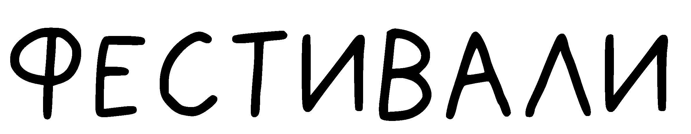

Международный Каннский кинофестиваль (фр. Festival international du film de Cannes) — ежегодный кинематографический фестиваль, проводимый в конце мая в курортном городе Канн (Франция) на базе Дворца фестивалей и конгрессов на набережной Круазет. Аккредитован Международной федерацией ассоциаций кинопродюсеров (FIAPF) в числе 15 конкурсных фестивалей игровых фильмов (так называемые «фестивали категории А»).
Каннский кинофестиваль является одним из старейших (задуман в 1939, впервые проведён в 1946 году) и самых престижных в мире. Главный приз — «Золотая пальмовая ветвь».

Венецианский международный кинофестиваль (итал. Mostra Internazionale d’Arte Cinematografica) — старейший международный кинофестиваль мира, основан в 1932 году по инициативе итальянского диктатора Бенито Муссолини, ежегодно проводится на острове Лидо с 1934 года (за исключением 1943—1945 и 1973—1978) во второй половине года (чаще в августе-сентябре).
Главный приз — «Золотой лев».

Берлинский международный кинофестиваль (нем. Internationale Filmfestspiele Berlin, Берлинале) — ежегодный международный кинофестиваль, проводится с 1951 года в Берлине. Основной приз — «Золотой медведь» (медведь — геральдический символ Берлина). Проводится ежегодно в феврале (но до 1978 года проводился летом). Премьеры проходят во дворце Берлинале.
В отличие от Каннского кинофестиваля, Берлинале ориентирован на прогрессивный геополитический кинематограф. Жюри уделяет особое внимание тому, чтобы в фестивальной программе были представлены фильмы со всего мира, в том числе фильмы стран бывшего «Восточного Блока».

Международный кинофестиваль в Сан-Себастьяне (баск. Donostiako Nazioarteko Zinemaldi, исп. Festival Internacional de Cine de Donostia-San Sebastián) — ежегодный международный кинофестиваль, с 21 сентября 1953 года проводится в Стране Басков в городе Доностия-Сан-Себастьян. По резонансу является одним из крупнейших культурных событий Испании.
Высшие награды фестиваля — «Золотая раковина» (за лучший фильм) и «Серебряная раковина» (вручается лучшему актёру, лучшей актрисе и лучшему режиссёру). Ежегодно на фестивале проходит вручение почётной награды — «Доностия» за вклад в кинематограф.

Лондонский кинофестиваль (англ. London Film Festival, сокращённо LFF, также известен как англ. BFI London Film Festival) — один из самых крупных и влиятельных международных кинофестивалей в Соединенном Королевстве. Проводится ежегодно с 1956 года во второй половине октября — начале ноября в Лондоне.
Главным призом кинофестиваля является «Сазерленд Трофи», им награждаются самые оригинальные дебютные фильмы. Организатором фестиваля является Британский институт кино, крупнейшим спонсором газета The Times. Ежегодно на кинофоруме проводится отбор из более чем 300 документальных и короткометражных фильмов из 50 стран мира. Традиционно программа фестиваля включает в себя картины, которые в Великобритании ранее не демонстрировались, в том числе недавно отреставрированные. На кинофоруме ежегодно представлена программа образовательных мероприятий, лекций, мастер-классов, презентаций событий киноиндустрии.

Кинофестиваль «Сандэнс» (англ. Sundance Film Festival) — национальный американский кинофестиваль независимого кино. Проводится в Парк-Сити, штат Юта, США в конце января c 1985 года.

Эдинбургский международный кинофестиваль проводится ежегодно с 1947 года в августе в Эдинбурге, Шотландия, в рамках Эдинбургского фестиваля.

Междунаро́дный кинофестива́ль в Торо́нто (англ. Toronto International Film Festival (TIFF)) — ежегодный кинофестиваль, проводящийся в Торонто (Канада) с 1976 года. В настоящее время фестиваль обычно начинается вечером в сентябрьский четверг после канадского Дня Работников (англ. Labour Day, первый понедельник сентября) и длится десять дней.

South by Southwest (SXSW) — ежегодное мероприятие, включающее в себя ряд музыкальных, кино- и медиафестивалей и конференций, проходящее в середине марта в США, в городе Остине, штат Техас. Фестиваль проводится с 1987 года. В последние годы продолжительность мероприятия составляет 10 дней.

Кинофестиваль «Трайбека» (англ. Tribeca Film Festival, TFF) — кинофестиваль, ежегодный международный конкурс кинофильмов, проходящий в Нью-Йорке, США. Основан в 2002 году Робертом Де Ниро, Джейн Розенталь и Крейгом Хаткоффом в качестве реакции кинематографистов на Террористические акты 11 сентября 2001 года с целью восстановления деловой и социальной активности наиболее пострадавшего Нижнего Манхэттена и, в частности, района Трайбека (TriBeCa от англ. Triangle Below Canal Street). В качестве главной миссии фестиваля заявлены необходимость переосмысления кинематографистами их влияния на общественное сознание и популяризация независимого кино.